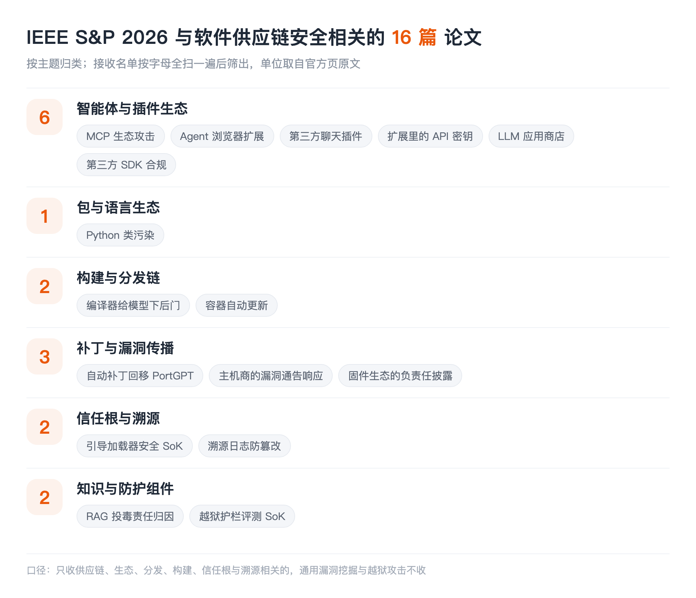

本文看点
01
12篇供应链相关论文
02
攻击面挪到MCP和扩展
03
传统包生态几乎空场
01
LIST INFO
本期说明
【会议】IEEE S&P 2026，第 47 届 IEEE 安全与隐私研讨会，2026 年 5 月，美国旧金山
【来源】S&P 2026 官方接收论文列表，含多个投稿周期
【口径】只收与软件供应链安全直接相关的：包与组件生态、分发与构建链、补丁传播、信任根。通用漏洞挖掘、模糊测试、越狱攻击这些即便是安全顶会的主流也不收

— S&P 2026 供应链相关论文的主题分布
和 ASE 那期一样，先说清楚边界：多数论文全文还没读，下面的介绍严格限制在标题和作者团队能支撑的范围内，不替作者把结论说满；本账号已经读过全文的会特别标出来。单位取自官方接收页的原文。
这一期最值得先说的不是某一篇，而是名单的形状。ASE 那边包生态、依赖、SBOM 是主力，而在 S&P 这边，传统包生态几乎空场，供应链相关的论文集中砸在了 MCP、浏览器扩展、聊天插件、LLM 应用商店这些新的组件生态上。同一年、同一个大主题，两个会议的重心完全不同。
02
AGENTS
智能体与插件生态
01
Parasites in the Toolchain: A Large-Scale Analysis of Attacks on the MCP Ecosystem
Shuli Zhao, Qinsheng Hou, Zihan Zhan, Yanhao Wang, Yuchong Xie, Yu Guo, Libo Chen, Shenghong Li, Zhi Xue
Shanghai Jiao Tong University, CHAITIN TECHNOLOGY, Hong Kong University of Science and Technology
对 MCP 生态攻击面的大规模分析。MCP 现在是智能体接工具的事实标准，一个 MCP server 就是一个第三方组件，装进来就获得了工具调用权限。标题里的"寄生虫"点得很准：这条工具链上的组件既能被投毒，也能反过来吃掉调用方。这大概是这批里最正面命中供应链定义的一篇。
02
Site Isolation is Dead: How Site Isolation is Broken in Agentic Browsers and Extensions
Suyoung Lee, Seongho Keum, Changoo Lee, Dongwon Shin, Sanghyun Hong, Byoungyoung Lee, Sooel Son
KAIST, Oregon State University, Seoul National University
站点隔离是浏览器安全的基石假设，而这篇说它在智能体浏览器和扩展里被打破了。原因不难想象：智能体天然要跨站点读取和操作，扩展又长期拥有跨站权限，两者叠在一起，浏览器几十年建起来的边界就被从内部绕过了。
03
When AI Meets the Web: Prompt Injection Risks in Third-Party AI Chatbot Plugins
Yigitcan Kaya, Anton Landerer, Stijn Pletinckx, Michelle Zimmermann, Christopher Kruegel, Giovanni Vigna
University of California, Santa Barbara
第三方聊天机器人插件里的提示注入风险。插件是典型的供应链结构：用户信任的是聊天机器人，实际执行的是第三方代码，而注入内容可以从插件拉取的网页里进来。信任传递了，但审计没有跟着传递。
04
KeyChaser: Unveiling API Keys in Browser Extensions
Shijin Chen, Willy Susilo, Yudi Zhang, Fuchun Guo
University of Wollongong
挖浏览器扩展里硬编码的 API 密钥。扩展是打包分发的制品，密钥一旦随包发出去就等于公开，而且撤销和轮换的成本极高。这和本账号解读过的智能体技能凭据泄露是同一类问题，只是载体从 Skill 换成了扩展。
05
LLMThief: Evaluating Configuration Leaking Risks in Commercial LLM App Stores
Pinji Chen, Jinlong Jiang, Jianjun Chen, Feiran Qin, Minghao Zhang, Jiahe Zhang, Haixin Duan, Kaiwen Shen, Hui Jiang
Tsinghua University, Wuhan University, Clouditera, Baidu
商业 LLM 应用商店里的配置泄露风险。应用商店是分发环节，上架的每个应用都带着自己的系统提示词和配置，这些东西既是开发者的资产，也是攻击者摸清应用行为的入口。本账号解读过 LLM App Store 的安全实测，这篇是配置泄露这一面的延伸。
03
BUILD
构建与分发链
06
Your Compiler is Backdooring Your Model: Understanding and Exploiting Compilation Inconsistency Vulnerabilities in Deep Learning Compilers
Simin Chen, Jinjun Peng, Yixin He, Junfeng Yang, Baishakhi Ray
Columbia University, University of Southern California
深度学习编译器的编译不一致性可以被用来给模型下后门。这个位置很要命：模型权重没被动，训练数据没被动，问题出在把模型编译成可执行形态的那一步。传统供应链防护盯的是源码和依赖，编译器这一环长期被当成可信基础设施，而这篇说明编译器本身就能成为投毒点。
07
Death Is Not the End: A Longitudinal Study on the Impact of Automatic Updates on Container Vulnerability Lifespans
Simge Tekin, Octavian Suciu, Sungsu Kwag, Yonghwi Kwon, Tudor Dumitras
University of Maryland, College Park, Google
纵向研究自动更新对容器镜像漏洞存活期的影响。容器镜像是今天最主要的分发单元之一，标题里"死亡不是终点"指的应该是漏洞并不会因为上游发布修复就消失，它在镜像里的实际存活取决于更新有没有真的滚下去。这和 ASE 那批的"修复传不到底"是同一个母题，只是换到了镜像层。
04
PATCH
补丁与漏洞传播
08
PORTGPT: Towards Automated Backporting Using Large Language Models
Zhaoyang Li, Zheng Yu, Jingyi Song, Meng Xu, Yuxuan Luo, Dongliang Mu
Huazhong University of Science and Technology, Northwestern University, University of Waterloo, Canonical Ltd.
用大模型做自动补丁回移。这篇值得单独说一句：本账号解读过 ASE 2026 那篇回移基准，它评测的五个工具里就有 PortGPT，而且在复现集上是表现最好的两个之一（80.5%）。一个会议提出工具、另一个会议建基准把它拉去考，两篇放在一起看，比单读任何一篇都清楚。
09
Behind the Curtain: How Shared Hosting Providers Respond to Vulnerability Notifications
Giada Stivala, Rafael Mrowczynski, Maria Hellenthal, Giancarlo Pellegrino
CISPA Helmholtz Center for Information Security
测共享主机服务商收到漏洞通告后到底怎么响应。漏洞通告是修复传播链上极关键又极少被量化的一环：研究者发了通告，中间商收不收、转不转、修不修，决定了这个洞最终会不会落地修复。
10
Responsible Disclosure is a Two-Way Street: Empirically Measuring the Responsible Disclosure Contract in the Firmware Ecosystem
Hui Jun Tay, Souradip Nath, Arvind S Raj, Abhay Bhat, Ishan Bansal, Audrey Dutcher, Moritz Schloegel, Adam Doupé, Tiffany Bao, Yan Shoshitaishvili, Ruoyu Wang
Arizona State University
实证测量固件生态里的负责任披露。标题说披露是"双向的"，意思很直白：研究者遵守了披露约定，厂商未必履行自己那一半。固件生态的下游极长且更新极慢，这条链上的约定是否被兑现，直接决定了漏洞的实际寿命。
05
TRUST
信任根
11
SoK: All You Ever Wanted to Know About Bootloader Security But Were Afraid to Ask
Connor Glosner, Aravind Machiry
Purdue University
引导加载器安全的系统化梳理。引导链是整台设备信任的起点，上面所有的签名校验、度量启动、可信执行都建立在它之上。这一层被攻破，上面所有的供应链防护都是空的。
06
GUARD
防护组件本身
12
SoK: Evaluating Jailbreak Guardrails for Large Language Models
Xunguang Wang, Zhenlan Ji, Wenxuan Wang, Zongjie Li, Daoyuan Wu, Shuai Wang
The Hong Kong University of Science and Technology, Renmin University of China, Lingnan University
45 项越狱护栏工作按六个维度归类，再把其中 13 个拉到同一张考卷上做安全、效率、可用性三目标评测。本账号已解读过，结论是面对自适应多轮攻击，绝大多数护栏的成功率仍在九成以上。放进这一期是因为护栏本身也已经变成一类可下载、可组合的组件：选一个护栏和选一个依赖包在操作上没有区别，但它对哪类攻击失效这件事并不随组件附带。
07
TAKEAWAYS
一点观察
传统包生态在 S&P 这边几乎空场。 npm、PyPI、Maven 这些词在整份名单里基本找不到，而在 ASE 那边它们是主力。这不代表问题解决了，更可能是分工：软工会议把包生态当作工程治理问题继续深耕，安全会议则整体转向了新出现、边界还没定型的组件生态。想跟踪供应链安全的全貌，只盯一个会议会严重失真。
新的组件生态一次性冒出来五篇。 MCP server、浏览器扩展、聊天插件、LLM 应用商店，这四类东西的共同点是：都在最近两三年成为可分发、可安装、可组合的第三方组件，而它们全都没有包生态那套已经磨了十几年的治理设施：没有统一的注册表审核、没有成熟的签名与来源验证、没有依赖关系的可见性。攻击者迁移的速度，比治理设施建设的速度快得多。
信任根在往更下层沉。 引导加载器、深度学习编译器，这两篇分别落在设备启动链和模型构建链的最底部。当上层的防护逐渐补齐，攻击自然往下找那些"默认可信、无人审计"的环节，而这些环节的共同特点是一旦失守，上面的所有校验都会变成走过场。
跨会议看同一个问题，信息量会翻倍。 PortGPT 在 S&P 提出、在 ASE 被基准评测，这种对照能直接回答"这个方法到底有多强"，而单读任何一篇都只能听到作者自己的说法。这也是做这种跨会议盘点的价值所在。